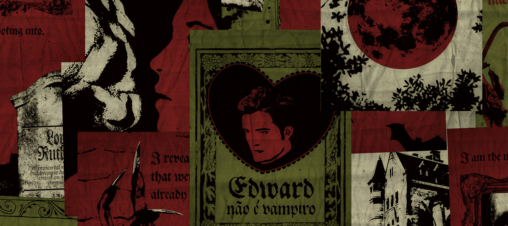
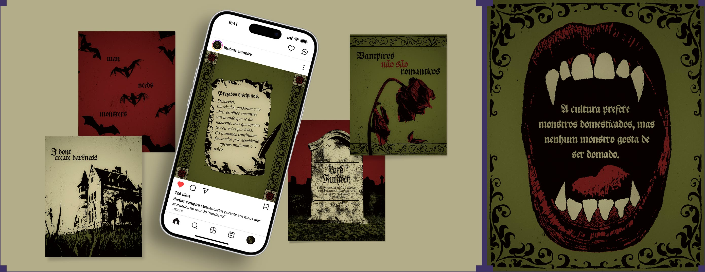
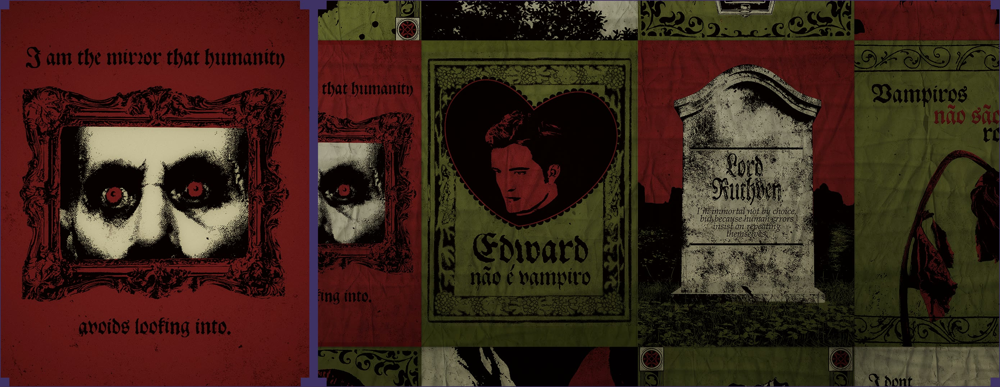
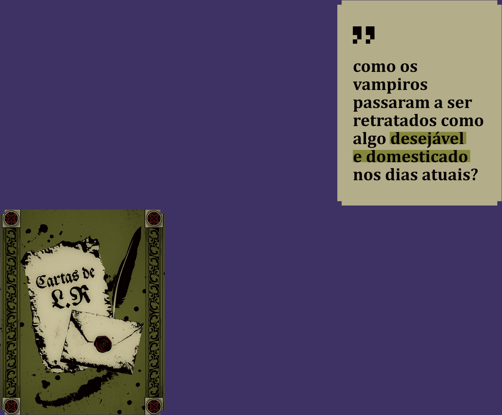
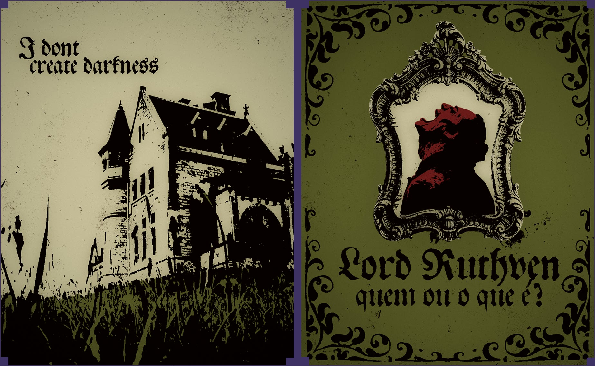
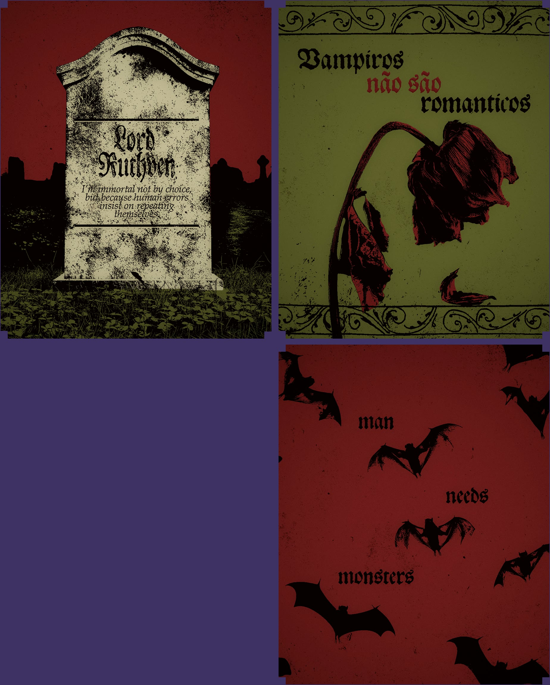
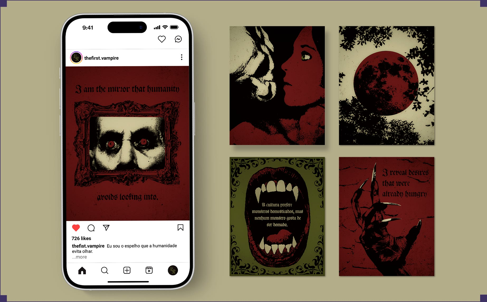
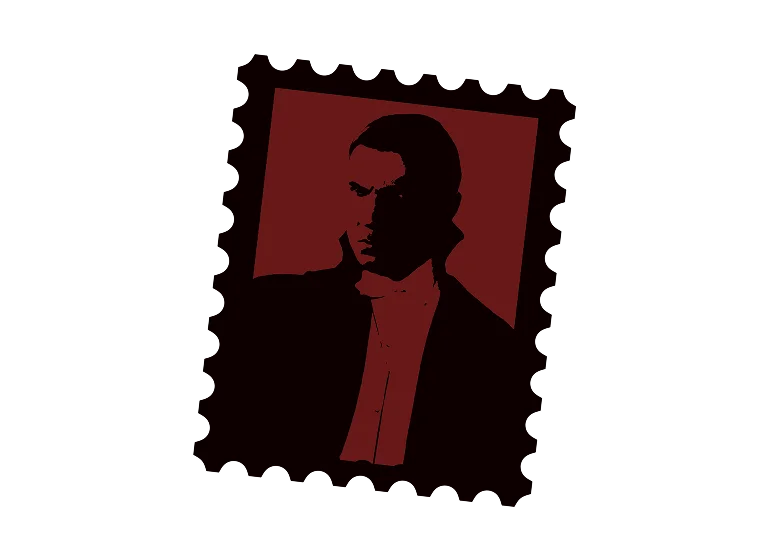
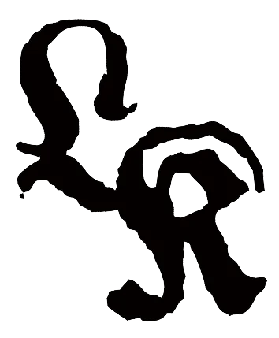
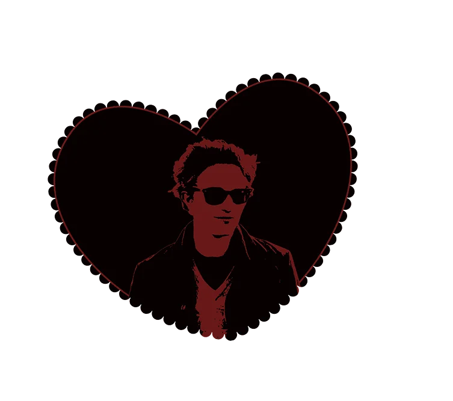

Lord Ruthven
A Experimentação Visual surgiu a partir de um incômodo nas redes sociais: por que o vampiro, figura originalmente associada ao medo, passou a ser retratado como romântico e desejável? A partir desse questionamento, o projeto se debruça sobre a origem literária do mito como recorte temático o primeiro vampiro da literatura moderna, que revela um ponto de ruptura: o vampiro não nasceu para ser amado, mas para expor poder, ameaça e decadência moral.
DisciplinaProjeto Digital
Ano2026-1






como os vampiros passaram a ser retratados como algo desejável
e domesticado nos dias atuais?


